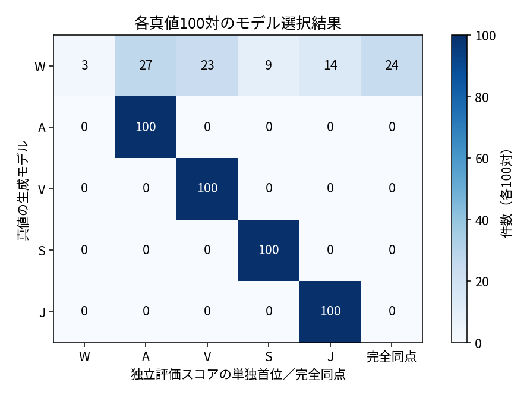
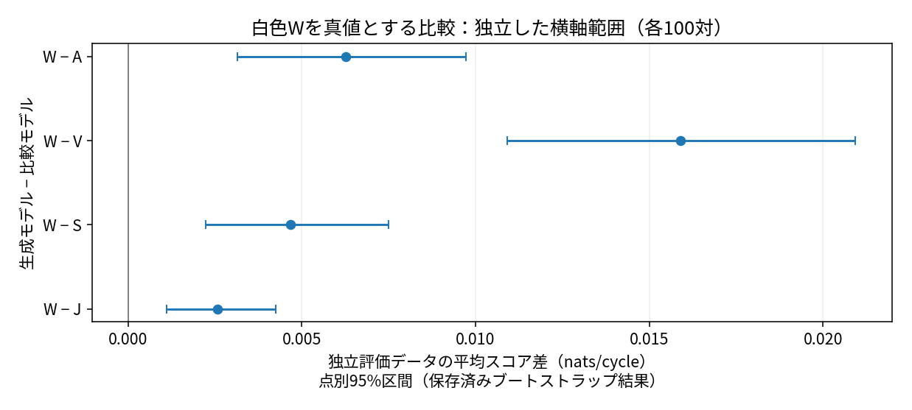
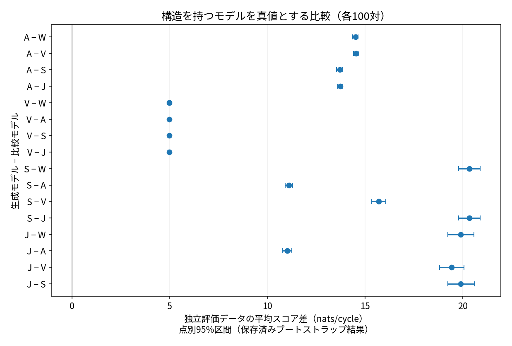
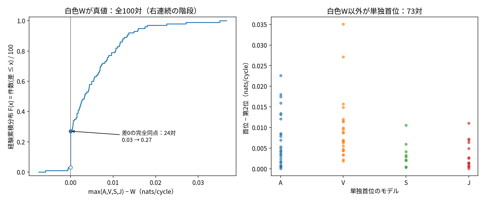

用語：生成条件（truth）はデータを作ったモデル、組（pair）は独立した学習用・評価用データの一組です。対数予測密度（score）は評価用データへの適合を表す値で、大きいほど高くなります。首位（winner）はその最大値、完全同点（tie）は値が完全に等しい場合です。train/testは学習用/評価用、parameterはパラメータを指します。
PML維持。PML／標準vocoderの品質比較は未実施。既知人工q・位相・H=I（伝達作用なし）の限定研究です。 既存の正式品質比較へ進めます。
全500 組・2500 対数予測密度が数値回収後に完了しました。4構造生成条件では各100/100が生成モデル単独首位。一方、白色生成条件ではW単独3、Wを含む同点24、他構造の単独首位73でした。白色の平均対数予測密度は全競合より高くても、組ごとの首位は一致しません。最大対数予測密度だけで生理的原因を断定できません。
これは神経モデルの学習ではなく、既知平均と位相の下での統計パラメータの最尤推定です。学習用/評価用は独立。有限5モデル内の比較で、自然音声品質、aspiration同定、モデル採用を結論しません。
| ID | モデル |
|---|---|
| W | 白色 |
| A | 1次AR着色 |
| V | 周期位相依存分散 |
| S | 周期振幅 |
| J | 微小時刻ずれの一次近似 |
Jは微小時刻ずれの一次接線近似であり、独立period jitterやaspirationではありません。各音声は各生成条件の組 0の保存評価用残差＋保存qのみ、全5本共通gain 0.1、0.256秒。良い例の選別はしていません。聴取は評価条件ではなく、HITLの依頼ではありません。
PCM16はrint(x×32768)の偶数丸め。clip・dither・個別正規化なし。量子化前peakは全本で範囲内を確認。科学用残差は不変で、新しい乱数生成はありません。全音声の加工・peak・入力SHA。
全生成条件の分母は100。完全同点は候補順へ割り振りません。100/100は普遍的成功ではなく、誤選択0/100のWilson95%上限は約3.70%です。

| 生成条件 | W | A | V | S | J | 完全同点 |
|---|---|---|---|---|---|---|
| W | 3 | 27 | 23 | 9 | 14 | 24 |
| A | 0 | 100 | 0 | 0 | 0 | 0 |
| V | 0 | 0 | 100 | 0 | 0 | 0 |
| S | 0 | 0 | 0 | 100 | 0 | 0 |
| J | 0 | 0 | 0 | 0 | 100 | 0 |
Wの完全同点内訳：{W,J}=7、{W,S}=6、{W,S,J}=11。残る4生成条件は完全同点 0。
| 生成条件 | 生成モデル単独首位 / 100 | Wilson95% |
|---|---|---|
| W | 3 | [0.010255, 0.084519] |
| A | 100 | [0.963007, 1.0] |
| V | 100 | [0.963007, 1.0] |
| S | 100 | [0.963007, 1.0] |
| J | 100 | [0.963007, 1.0] |
差は生成条件候補−比較候補。正は平均held-out 対数予測密度が高いことを示します。主表示はnats/cycle（正本nats/record÷64）。全20比較n=100、組単位bootstrap 10,000回の点別95%区間。多重比較補正済みの優越や同等性は主張しません。


| 差 | n | 平均 nats/cycle | 点別95%区間 |
|---|---|---|---|
| W−A | 100 | 0.00626657 | [0.00313935, 0.00972083] |
| W−V | 100 | 0.0158909 | [0.0109112, 0.0209318] |
| W−S | 100 | 0.00467789 | [0.00223827, 0.00749764] |
| W−J | 100 | 0.00258112 | [0.00110615, 0.00425162] |
| A−W | 100 | 14.512 | [14.3701, 14.6554] |
| A−V | 100 | 14.5473 | [14.4041, 14.6966] |
| A−S | 100 | 13.7039 | [13.5543, 13.8515] |
| A−J | 100 | 13.7343 | [13.5947, 13.8696] |
| V−W | 100 | 4.98096 | [4.91344, 5.04912] |
| V−A | 100 | 4.9872 | [4.91973, 5.05532] |
| V−S | 100 | 4.98096 | [4.91403, 5.04731] |
| V−J | 100 | 4.98173 | [4.91364, 5.05061] |
| S−W | 100 | 20.3492 | [19.7989, 20.9018] |
| S−A | 100 | 11.1118 | [10.9225, 11.3084] |
| S−V | 100 | 15.6958 | [15.3421, 16.0578] |
| S−J | 100 | 20.3492 | [19.8061, 20.8997] |
| J−W | 100 | 19.9119 | [19.2495, 20.5779] |
| J−A | 100 | 11.022 | [10.7957, 11.2516] |
| J−V | 100 | 19.4357 | [18.8163, 20.0779] |
| J−S | 100 | 19.9119 | [19.2436, 20.5978] |
S対最良whiteの母分布KL 20.0935 nats/cycleと、有限学習用から推定したモデルの実測評価用 対数予測密度差は同じ量ではありません。−30 dBだけを識別困難さの証拠にはしません。同じ差列でも比較別bootstrap streamにより区間端は異なる場合があります。
新しい対数予測密度閾値・採用gateは設けません。max(non-W 対数予測密度)−W 対数予測密度は正73・零24・負3。平均の優位性と個々の比較結果を分けます。
全100組、nats/cycle：中央値 0.00326495、四分位 [0, 0.0085823]、95百分位 0.0159828、最大 0.0350453。

他構造の単独首位73件の勝差（首位−第2位、nats/cycle）：中央値 0.00477912、四分位 [0.0020181, 0.0088963]、95百分位 0.0176518、最大 0.0350453。
| 単独首位 | 件数 | 勝差 nats/cycle | パラメータ強度の定義 | 強度分布 |
|---|---|---|---|---|
| A | 27 | 中央値 0.00437036、四分位 [0.00171158, 0.0103211]、95百分位 0.0178144、最大 0.0225913 | abs(a) | 中央値 0.0103634、四分位 [0.00417394, 0.0147579]、95百分位 0.0195742、最大 0.0279185 |
| V | 23 | 中央値 0.00689954、四分位 [0.00458883, 0.0115177]、95百分位 0.0260058、最大 0.0350453 | sqrt(bc^2+bs^2) | 中央値 0.0300756、四分位 [0.0211785, 0.0393724]、95百分位 0.0590798、最大 0.0786173 |
| S | 9 | 中央値 0.00286365、四分位 [0.0020181, 0.00412376]、95百分位 0.00873612、最大 0.0105775 | tau2/sigma2 | 中央値 0.00145882、四分位 [0.000788607, 0.00237102]、95百分位 0.00475107、最大 0.00530793 |
| J | 14 | 中央値 0.00199469、四分位 [0.000921419, 0.00599323]、95百分位 0.00854442、最大 0.0110072 | tau2/sigma2 | 中央値 0.000986785、四分位 [0.000500562, 0.00250717]、95百分位 0.00290049、最大 0.00297576 |
Aの|a|、Vのsqrt(bc²+bs²)、S/Jのτ²/σ²はモデル内の異なる強度で、相互に同一尺度ではありません。S/Jの追加固有値/白色分散比（実direction norm²×τ²/σ²）もJSONに保存しています。いずれも生理的原因の強さではありません。
初回は500組生成・2500fit試行、2112成功・VのKKT失敗388件。VのSLSQP success flagと独立KKT gateの精度が一致しませんでした。初回の混同行列はV成功に条件付けられた別集計として保存し、全100の識別率へ書き換えていません。
v2は同じ入力・同じモデル・同じKKT gateで388件だけを内部Newton精密化し、全件1stepで回収しました。最終KKT最大2.36835e−14。旧成功2112件をそのまま保持し、残差を再生成していません。これは計算精密化であり、モデル改善・音質改善ではありません。元ソース・入力のhash不変を確認済みです。
初回wall 14.814759秒、回収wall 5.925861秒。回収checkpointのstatus文字列は実装上startingのままですが、最終receiptはcompletedで500処理・388成功を記録しています。
固定100組は記述的予算で、正式品質評価の100自然音声とは別です。普遍的識別成功・稀な誤りの精密測定・生理的原因の同定を主張しません。PMLを維持します。